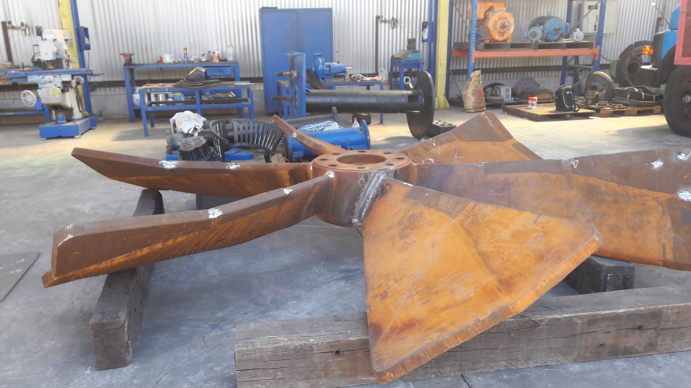

WELDING OF ORE MIXING PROPELLER
Before starting the preparation of the joint for welding, a visual inspection will be carried out to check for the presence of oxidation, grease, oil and cracks in the base material.
Removal of damaged material using oxy-cut.
Performing END (Penetrating Liquid) to check for the presence of possible cracks in the base material.
Alignment of the propeller blade on the rotor to perform the punctuation weld.
Execution of the weld root.
Conducting NTDs (Penetrating Liquid) to check for the presence of possible discontinuities at the weld root.
Technologies:
- - AWS Standards
- - ASTM Steel piles
- - Welding Inspection
- - ASME section IX
- - ASME B31
- - ASME section V
- - SAP
- - MS Project